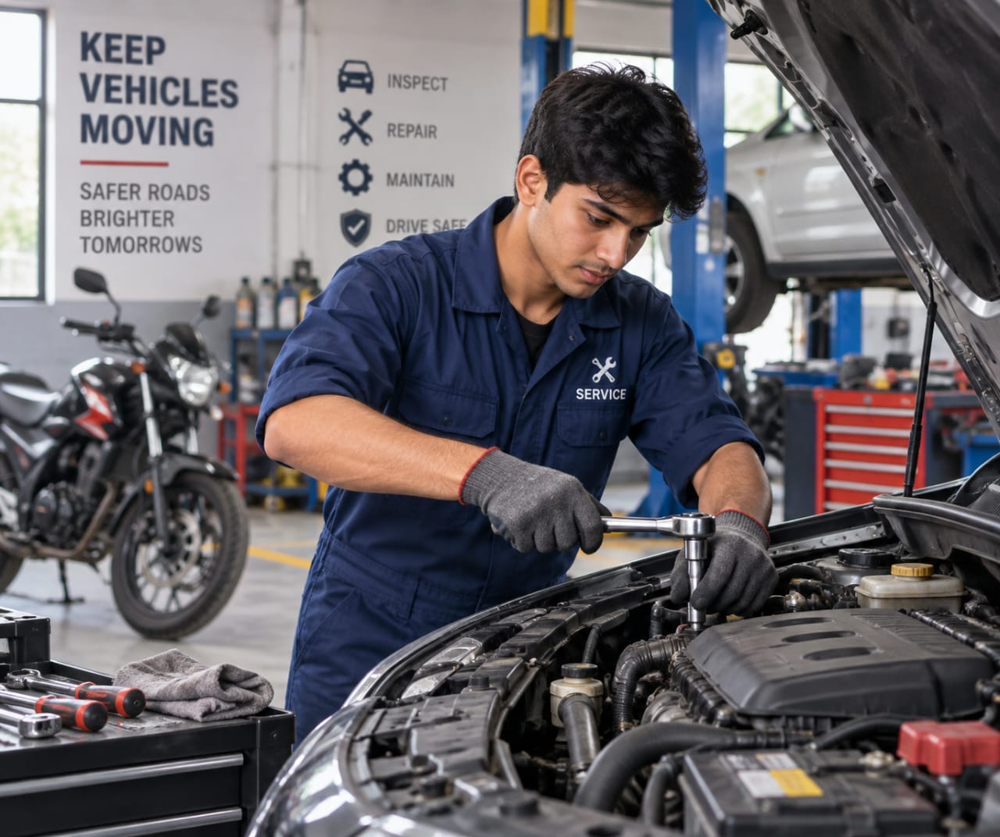

- Imagine your car makes a strange sound while you are driving.
- You could not find out what it is, so you take the car to a car workshop.
- There someone checks the car to find out what is causing the problem.
- They inspect the engine, brakes, tyres, and other parts of the car.
- They use tools and testing equipment to find the exact problem.
- Finally they find out the problem and fix it.
- The person who does this is called an Automobile Mechanic
- 👉 In simple words: Automobile Mechanics find problems in vehicles, repair them, and make sure they work properly and safely.
Automobile Mechanic
What Do They Do?

🎓 How to Become an Automobile Mechanic
The courses to pursue this career are given below :
After Class 10, you can join an ITI Mechanic Motor Vehicle course to learn how to inspect, repair, and maintain cars, trucks, and other motor vehicles.
ITI – Mechanic Motor Vehicle (MMV)
Duration: 2 Years
Eligibility: Class 10 pass with Science and Mathematics
Entrance Exam: State ITI Admission / Merit-Based Admission
📝 Exam Details
(Click on the exam name to see full details)
State ITI Admission Merit Based AdmissionNote: Admission rules and selection methods may vary by state.
After Class 12, you can choose an Automobile or Automotive Technology course to learn more about vehicle systems, servicing, repair, and maintenance.
B.Voc – Automobile Manufacturing / Automotive Servicing Technology
Duration: 3 Years
Eligibility: Class 12 pass
Entrance Exam: CUET-UG / University Entrance Exams / Merit-Based Admission
📝 Exam Details
(Click on the exam name to see full details)
CUET UG University Entrance Exams Merit Based AdmissionNote: Automobile and Automotive Technology programmes may have different course names, eligibility rules, and admission methods depending on the university or college.
- These certification courses mainly focus on practical automobile repair, servicing, maintenance and industry-based training.
- Some of the institutions offering certifications in automobile mechanics are listed in the college section below.
Note:
(Age limits, marks, and admission process may vary depending on the college or state.
Below are some colleges that offer these courses.
These courses are available in many colleges and universities across India. You can choose colleges based on your location, budget, and entrance exams.)
🏛️ Colleges offering these courses in India
(Tap on a college to view details)
After Class 10
E.K. Nayanar Memorial Government Model ITI, Kasargod, Kerala Government Industrial Training Institute, Shimla, Himachal Pradesh Kamal Ratan Private Industrial Training Institute, Jaipur, Rajasthan Fr. Agnel Education Complex Private ITI, Vashi, Navi Mumbai Loyola Industrial Training Institute, Bengaluru, KarnatakaAfter Class 12
Tata Institute of Social Sciences (TISS), Mumbai, Maharashtra Hindustan Institute of Technology and Science (HITS), Chennai, Tamil Nadu J.C.Bose University of Science ampnd Technology, Faridabad, Haryana Medhavi Skills University, Sikkim Bharatiya Skill Development University (BSDU), Jaipur, RajasthanSTEP 1
Imagine you are working as an Automobile Mechanic in a car workshop.
STEP 2
A customer brings a car for regular servicing after driving it for many kilometres.
STEP 3
You check the engine oil, air filter, brakes, tyres, and other important parts.
STEP 4
You replace the engine oil and change any parts that need replacement.
STEP 5
You check the car again and take it for a short test drive to make sure it is working properly.
STEP 6
If you enjoy working with cars, using tools, and keeping vehicles in good condition, this career may suit you.
Car Service Centres
Service, repair, and maintain cars.
Automobile Workshops
Find vehicle problems and repair different parts.
Car Dealerships
Inspect and service vehicles sold by the dealership.
Automobile Manufacturing Companies
Check and maintain vehicles and vehicle parts during production.
Transport Companies
Maintain cars, buses, and other vehicles used by the company.
Government Vehicle Departments
Service and maintain vehicles used by government offices.
Automobile Repair Garages
Repair and maintain vehicles for customers.
(Click Yes or No for each question)
1. Are you interested in learning how cars and other vehicles work?
2. Are you interested in knowing about different parts of a vehicle?
3. Have you ever wondered what happens inside a car or bike when you start it?
4. Imagine you are working as an Automobile Mechanic at a vehicle service centre. A customer brings his car that has a problem with its brakes . You inspect the brake system, find the damaged part and replace it. You test the brakes to make sure they are safe. Would you enjoy doing this type of work?
5. A bike with a starting problem is brought to you. You check the battery, wiring, and other parts to find the problem. You repair the faulty part and test the bike before giving it back to the customer. Now the bike is ready because of your work. Does this type of job makes you happy?